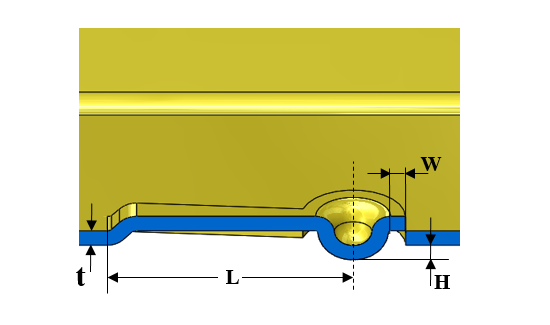

スプーンのパラメータは、設定された値に従う必要があります。
スプーンとは、非拘束側にディンプルを形成した特殊なオープンランスの一種です。スプーンには細いネック部があり、ディンプルを押した際にスプリングとして機能します。金型上の問題を回避し、意図した機能を実現するためには、スプーン形状を設計する際に適切な寸法パラメータを維持する必要があります。
一般的なガイドラインとして、
スプーンフランジの最小幅（W）は、板厚の 0.8 倍以上とする必要があります。
スプーンの最小長さ（L）は、板厚の 10 倍以上とする必要があります。
スプーンの最小高さ（H）は、板厚の 0.5 倍以上かつ 1.2 倍以下とする必要があります。
DFMPro はスプーン形状を識別し、スプーン長さ（L）、スプーンフランジ幅（W）、スプーン高さ（H）を算出します。これらの値は設定された値と照合して検証されます。スプーンの各パラメータは、板厚に対する比率として算出されます。
ユーザーは、デフォルトで設定されている値を編集することができます。

ここでは、
H = スプーン高さ
L = スプーン長さ
W = スプーンフランジ幅
t = 板厚